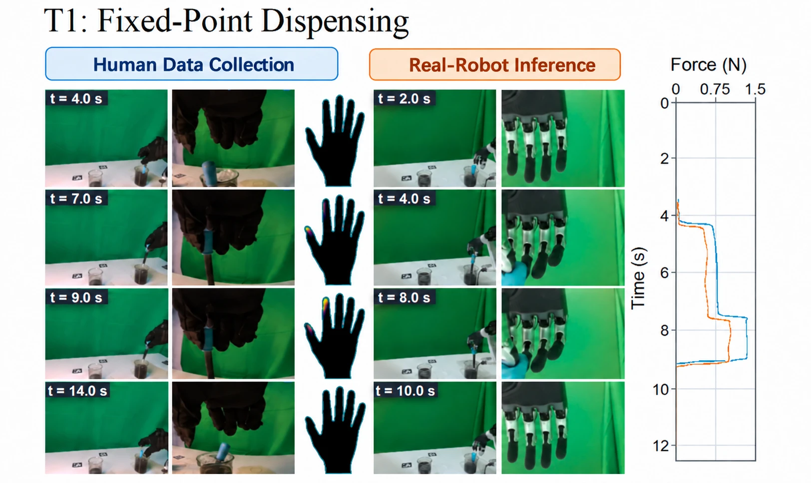
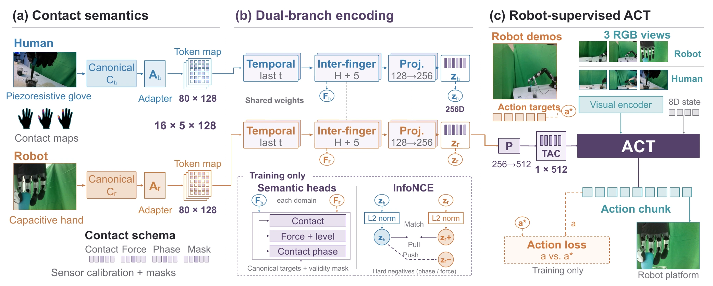
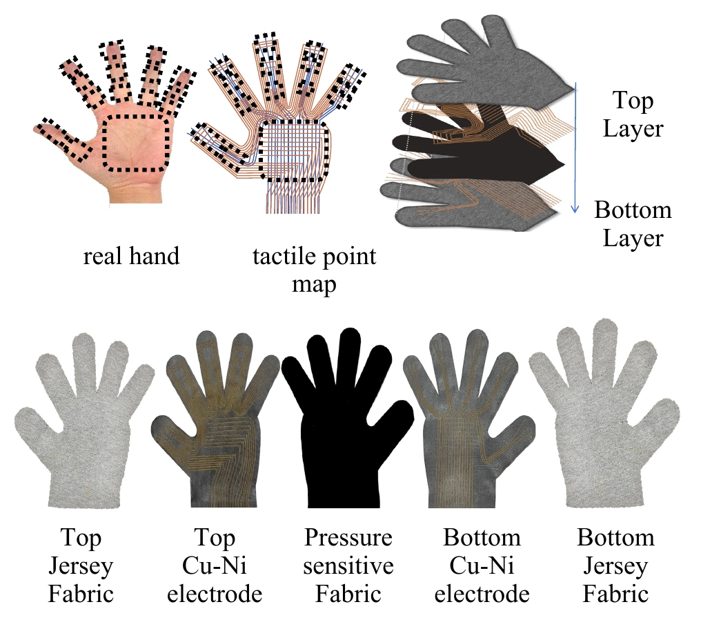
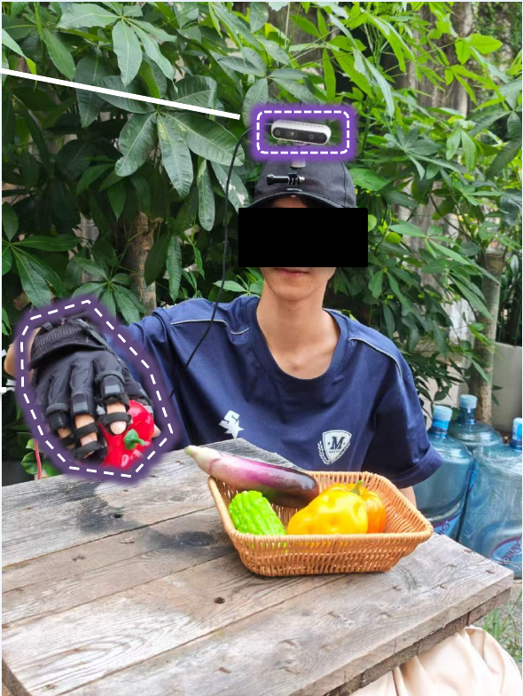
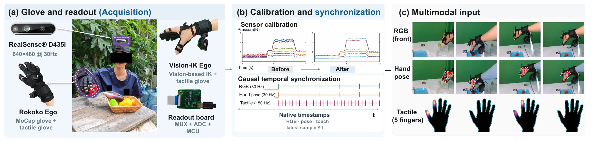
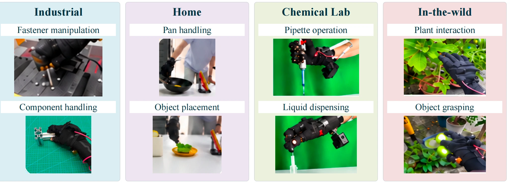
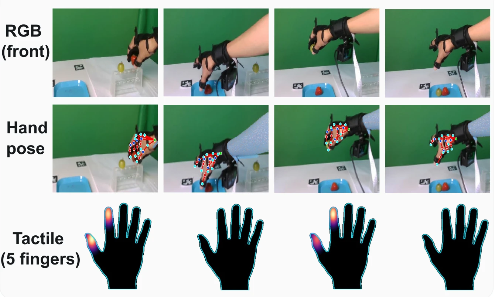
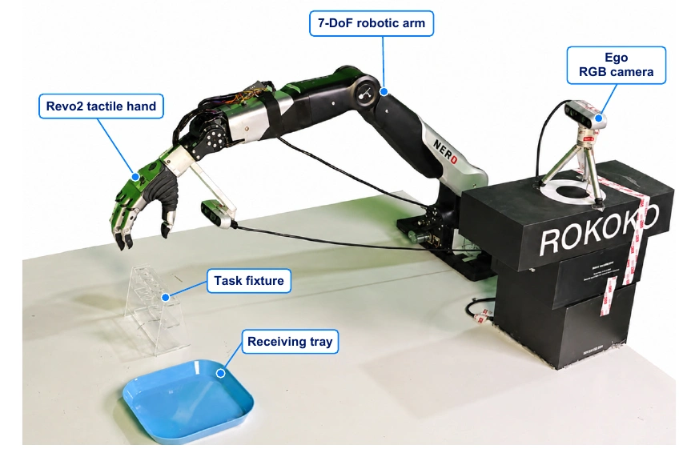

TACROSS↗
Learning from human touch
across heterogeneous
tactile sensors.
An Efficient and Low-Cost Scalable Human Touch System Across Heterogeneous Tactile Sensors for Dexterous Robot Learning
Affiliations & author notes +
1 The University of Hong Kong 2 The Chinese University of Hong Kong (Shenzhen) 3 Ocean University of China 4 Wuhan University 5 Wuhan Textile University 6 INFIFORCE
* Equal contribution. † Corresponding authors.
Recording throughput
140 vs. 40 episodes / hourLower acquisition equipment cost
$520 Vision-IK Ego vs. $12,000 Robot-onlyFour-task mean success
vs. 92.2% Robot-only under matched time budgetsHuman demonstrations make touch easier to collect. TACROSS aligns contact semantics between a piezoresistive human glove and a capacitive robot hand, so human touch can support robot learning despite different sensor technologies.
Contact makes
the difference.
Explore real robot demonstrations, including successful executions and failure examples from the presentation.
2× source playback
2× source playback
2× source playback
Human touch & robot execution: keyframes +

Human and robot sequences are separate demonstrations, with timestamps local to each recording. Figure supplied in the presentation.
Different sensors.
Shared contact semantics.
Matching raw sensor values is ill-posed. TACROSS represents contact events, relative intensity and phase in a shared space.

Piezoresistive glove
Calibration · anatomical regions · validity masks
Capacitive Revo2
Normalization · finger grouping · validity masks
ACT policy
Robot demonstrations provide ground-truth action supervision. Human demonstrations support tactile representation learning and confidence-weighted auxiliary hand supervision.
Representation & supervision details +
Measurement validity. Masks distinguish missing measurements from observed no-contact values. Canonical fields encode regional contact and interaction dynamics.
Robot-grounded actions. Retargeted human hand targets are auxiliary pseudo-labels. They do not replace executed robot actions as ground truth.
Deployment. Only robot observations are required at inference. The evaluated system still relies on robot demonstrations and embodiment-specific calibration.
Touch, captured
at human scale.
A fabric-based tactile glove records touch alongside RGB and hand pose. Human collection can proceed independently of robot availability.

A soft interface.
A small component cost.
- Glove component BOM
- $10.86
- Physical sensing locations
- 285
- Readout frame
- 256 values
- Output rate
- ~150 Hz
Physical sensing locations, readout values and the learned 256-D latent are distinct quantities. Component BOM is separate from full acquisition equipment cost.

Vision-IK Ego $520
Vision-based hand tracking + tactile glove
140 episodes / hourRokoko Ego $2,150
Motion capture + tactile glove
112 episodes / hourRobot-only reference: $12,000 equipment and 40 episodes/hour. Throughput refers to recorded episodes; acceptance rates are reported separately in the paper.
One synchronized record of the interaction.

Every interaction
has a contact story.
Human recordings span industrial, home, laboratory and outdoor settings, with synchronized visual, motion and tactile observations.

Human recordings
Robot recordings
Valid human demonstrations
Aligned observations,
richer demonstrations.
RGB captures the scene. Hand pose describes motion. Touch captures the contact that vision can leave ambiguous.
The full corpus contains 24,913 recorded and 22,486 valid human + robot episodes. Corpus totals differ from the subsets used for policy training. Robot closed-loop evaluation covers four tasks.
Dataset release status ↗
More human touch.
Stronger robot learning.
Separate experiments examine data augmentation, contact-semantic alignment and the acquisition trade-off.
Human experience.
Robot execution.
The learned policy is evaluated on four contact-rich tasks using the Revo2 tactile hand. At deployment, it receives robot RGB, state and touch.

Human touch and
alignment both matter.
With 30 robot demonstrations per task, adding 150 human demonstrations and the full TACROSS pipeline increases mean success from 51.3% to 91.9%.
Paper Table IV · Four-task average · Human-augmented variants use R:H = 1:5.
Fixed at 15 robot episodes.
Increasing human demonstrations from 0 to 90 raises mean success from 32.5% to 85.6%.
Human demonstrations per task → · Paper Table V · Mean of T1–T4
Similar success, lower equipment cost.
| Configuration | Mean success | Equipment |
|---|---|---|
| Robot-only | 92.2% | $12,000 |
| Rokoko Ego | 93.5% | $2,150 |
| Vision-IK Ego | 91.5% | $520 |
Paper Table II / Fig. 7 · Ego variants at nominal R:H = 1:5. These results use a different budget setting from the fixed-count ablation above. Costs cover acquisition equipment.
Scope & current limitations +
Transfer still depends on robot demonstrations, as well as retargeting and calibration specific to each embodiment. The reported evaluation uses the Revo2 hand and four closed-loop tasks. Broader robot-hand coverage and smaller robot-data budgets remain future directions.
Explore TACROSS.
The manuscript is available below. Hardware designs, software and the dataset are planned for release.
Read the paper ↗
System, method and full experimental details.
Reproduce the system
Planned release · Repository link to follow.
Learn from human touch
Planned release · Download link to follow.
Citation
@misc{chen2026tacross,
title = {TACROSS: An Efficient and Low-Cost Scalable Human Touch System Across Heterogeneous Tactile Sensors for Dexterous Robot Learning},
author = {Chen, Bo and Hu, Huanzhang and Ma, Junyang and Yue, Bo and Yu, Fangdi and Chen, Haijier and Lai, Xianxin and Pan, Shuyu and Yang, Zhen and Sun, Xiaoquan and Cui, Wenze and Jiang, Zhongliang and Liu, Shaopeng and Chen, Jiayu},
year = {2026},
note = {Research manuscript}
}Manuscript citation. Publication venue and persistent identifier will be updated when available.